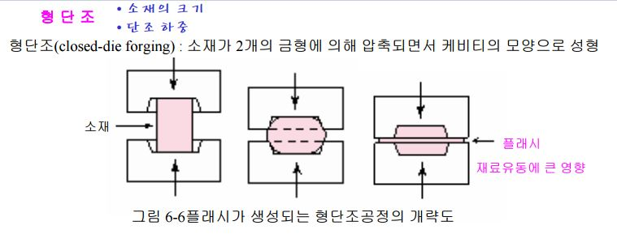

Ref : http://blog.naver.com/hbm007/20008075031
http://blog.naver.com/bjchang/140011717968
https://www.google.co.kr/url?sa=t&rct=j&q=&esrc=s&source=web&cd=12&sqi=2&ved=0CEkQFjALahUKEwi9uaPuyYTJAhXBraYKHfdCDxU&url=http%3A%2F%2Fwww.cmplab.re.kr%2Fboard%2Fpds%2Fboard_download.php%3Ffile%3Dpds0112_1.pdf%26dn%3D1&usg=AFQjCNEhX0WYKBh05YxcQ-uUMiU5xeTtdQ&sig2=cvoaYB0Dipvvt-KLghDpJQ&bvm=bv.106923889,d.dGY
단조는 기계적 성질이 우수한 제품을 얻기 위하여 금속에 충격이나 압력을 가하여 행하는 작업이다. 단조는 소성가공으로 작업 온도에 따라 열간, 온간, 냉간 등의 종류가 있고, 작업 기계별로는 단조 햄머, 단조 프레스등의 여러 가지가 있으며, 이러한 단조 방법은 생산 수량, 재료의 특성, 단조품의 형상 등에 의하여 결정된다.
단조
금속을 가열 또는 상온의 상태에서 프레스 혹은 햄머 등으로 가압하여 소정의 치수, 형상으로소성변형 하는 것
단조의 목적
- 소재의 성형
- 단련 : 조직의 개선과 기계적 성질의 향상
